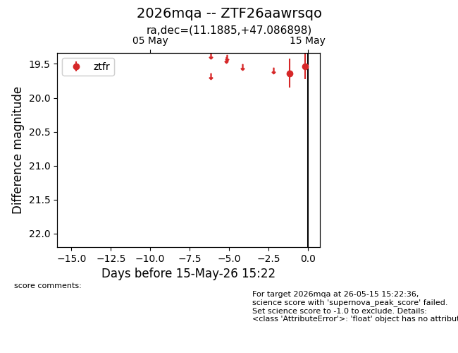
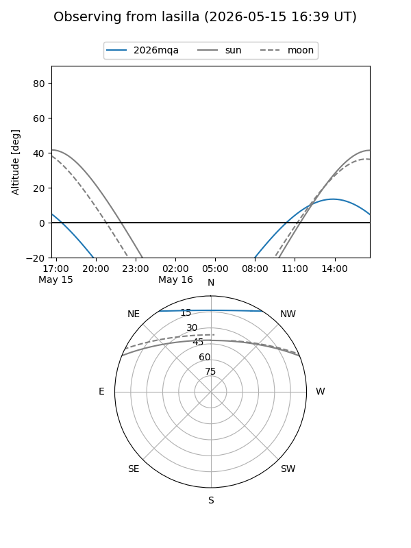
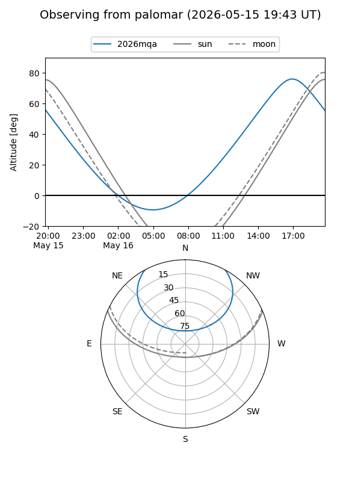

2026mqa
Target 2026mqa at 2026-05-15 15:24
Aliases and brokers:
FINK: link
Lasair: link
ALeRCE: link
TNS: link
YSE: link
alt names
ZTF26aawrsqo (ztf,fink_ztf)
2026mqa (tns,yse)
Coordinates:
equatorial (ra, dec) = 11.1885,+47.08690
equatorial (HMS+DMS) = 00:44:45.25,+47:05:12.83
galactic (l, b) = (121.7498,-15.76951)
Flags:
Photometry:
last ztfr=19.54
2 ztfr detections
Lightcurve

Visibility


Additional plots